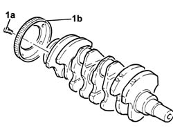
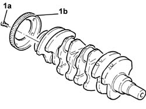
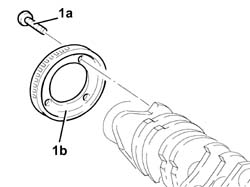

1024A28 crankshaft phonic wheel for rpm and timing sensor-replace with crankshaft removed
- Path
- Procedures > 10 ENGINE > 1024 CRANKSHAFT AND FLYWHEEL > 1024A crank shaft > 1024A28 crankshaft phonic wheel for rpm and timing sensor-replace with crankshaft removed
- Kind
- repair procedure (removal / refitting; the operation number is the code)
- Applies to
- engines: 1.6 TS, 2.0 TS, 1.9 JTD 8V; all production periods
- Interactive page
- https://sloeber94.github.io/elrnDB-a147/en/#/3025995
Applies to: engines: 1.6 TS; all production periods
 Removing
Removing
 Refitting
Refitting1. Tighten the bolts (1a) and remove the flywheel (1b) for the rpm and timing sensor from the crankshaft.

Applies to: engines: 1.6 TS; all production periods
Refitting
RemovingFit a new flywheel for the timing and rpm sensor on the crankshaft and fix it using the bolts.
Applies to: engines: 2.0 TS; all production periods
Removing
Refitting1. Tighten the bolts (1a) and remove the flywheel (1b) for the rpm and timing sensor from the crankshaft.

Applies to: engines: 2.0 TS; all production periods
Refitting
RemovingFit a new flywheel for the timing and rpm sensor on the crankshaft and fix it using the bolts to the specified torque
 | Fastening | Component | Ø | Value (daNm) |
|---|---|---|---|---|
- | Bolt | PHONIC WHEEL ON CRANKSHAFT | M6 | (Crankshaft side) 0.8 - 1.0 |
Applies to: engines: 1.9 JTD 8V; all production periods
Dismantling
Reassembling1. Tighten the bolts (1a) and remove the flywheel (1b) for the rpm and timing sensor from the crankshaft.

Applies to: engines: 1.9 JTD 8V; all production periods
Reassembling
DismantlingFit a new flywheel for the timing and rpm sensor on the crankshaft and fix it using the bolts.